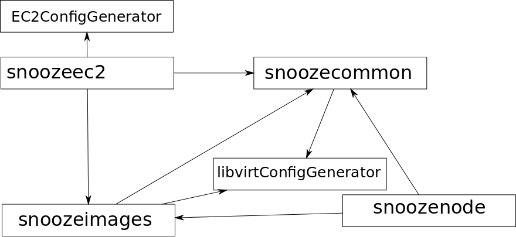

Snooze
What's new since September 2013 ?
Since Eugen last visit !
Matthieu Simonin
January 8, 2014
Three releases
- October 7, 2013, Snooze 2.0
Introduce Cassandra as database backend
- December 6, 2013 : Snooze 2.1
Introduce image management, and EC2 interface, web gui and capistrano based deployment
- January 8, 2014 : Snooze 2.1.1
Bug fixing about migrations and euca2ools support.
New dependencies in the project

snoozeimages project
- Goal : to manage base disk images.
- Provides a REST API
- Support libvirt pools as backend.
snoozeec2 project
- Goal : to provide a support for a subset of the EC2 API functions.
- Leads to better compatibility with EC2 based system (libcloud, euca2ools, resilin ...).
EC2ConfigGenerator library
- Goal : to provide a convenient way of generating EC2 API language (xml)
- Relies on Jaxb
libvirtConfigGenerator library
- Goal : to provide a convenient way of generating/parsing libvirt template.
- Relies on Jaxb (but implemented from scratch)
Snooze-capistrano
- Goal : to provide a modular and customizable deployment script for Grid'5000.
- Keywords : Ruby / Capistrano / Puppet
Snooze web
- Goal : to provide a web gui to snooze.
- Keywords : Ruby / sinatra
Documentation updated
- Goal : to have a documentation in sync with releases
- Based on sphinx
Submission process
Goal : to allow user to submit virtual machine either :
- by passing virtual machines specs (cpus, ram, network)
The libvirt template is generated on the fly
- or with the libvirt template (retrocompatibility)
VM disk image placement
Goal : to implement different policies concerning image disk placements.
- Backing :
master file resides on shared directory, diff files can be local.
- localBacking :
master file and diff are local.
VM disk image propagation
Investigating different solutions.